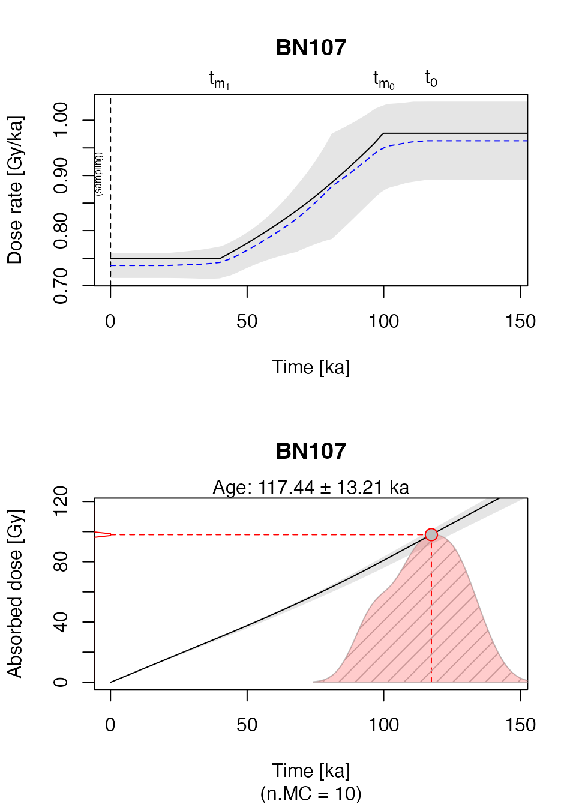
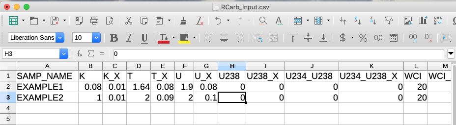

Get started with RCarb
Sebastian Kreutzer1,2 & Barbara Mauz3
Last modified: 2025-07-25 (‘RCarb’ version: 0.1.7)
Source:vignettes/GetStarted.Rmd
GetStarted.Rmd1Institute of Geography, Universität Heidelberg,
Germany
2Archéosciences Bordeaux, UMR 6034,
CNRS-Université Bordeaux Montaigne (France)
3Department
of Geography and Geology, University of Salzburg, Salzburg
(Austria)”

Scope
Getting started with a new R package can be a very tedious business (if not to say annoying). This document was written with the intention to make your first steps as painless as possible.
Quick start with the example dataset
If you have no idea what a function does and how it works, it is
always a good idea to have a closer look into the example sections of
the package functions. The package 'RCarb' has one central
function named model_DoseRate(). The example given in the
example section in the manual will be used in the following to
illustrate the central package functionality in three steps.
Load example data
##load example data
data("Example_Data", envir = environment())To get a first impression on how the example dataset looks like, you
call the function head() to print the first five rows of a
data.frame on the terminal.
head(Example_Data)## SAMP_NAME K K_X T T_X U U_X U238 U238_X U234_U238 U234_U238_X
## 1 BN107 0.080 0.010 1.64 0.08 1.90 0.08 0 0 0 0
## 2 BN102 0.170 0.009 2.59 0.03 3.02 0.07 0 0 0 0
## 3 BN106 0.560 0.030 1.80 0.11 0.83 0.03 0 0 0 0
## 4 LV61 0.131 0.005 0.85 0.03 0.86 0.11 0 0 0 0
## 5 LV99 0.047 0.003 0.59 0.03 1.94 0.11 0 0 0 0
## 6 D101 0.105 0.004 0.65 0.02 1.25 0.08 0 0 0 0
## WCI WCI_X WCF WCF_X CC CC_X DIAM DIAM_X COSMIC COSMIC_X INTERNAL INTERNAL_X
## 1 20 7 7 7 62 1 180 10 0.180 0.0100 0 0
## 2 20 10 10 10 68 1 180 22 0.180 0.0100 0 0
## 3 20 6 6 6 49 1 145 15 0.180 0.0100 0 0
## 4 12 5 2 2 17 1 210 30 0.069 0.0035 0 0
## 5 8 3 5 5 61 3 210 30 0.182 0.0090 0 0
## 6 8 3 2 2 59 2 210 20 0.180 0.0100 0 0
## ONSET ONSET_X FINISH FINISH_X DE DE_X
## 1 100 10 40 10 98 9
## 2 100 10 40 10 130 10
## 3 100 10 40 10 120 10
## 4 120 10 40 10 52 5
## 5 60 10 40 10 50 4
## 6 180 10 130 10 81 5Unfortunately, the naming of the table columns is not straightforward to understand. The good news is that each column carries additional information that can be seen in the R terminal by typing, e.g., for the column ‘K’ (which is the 2nd column):
attributes(Example_Data$K)## $UNIT
## [1] "%"
##
## $DESCRIPTION
## [1] "K concentration"It reveals that the numbers in the column correspond to the potassium concentration and are given in ‘%’. Similar all other columns can be inspected.
And here the full overview
| COLUM | UNIT | DESCRIPTION |
|---|---|---|
| SAMP_NAME | NA | Sample name, unique identifier |
| K | % | K concentration |
| K_X | % | K concentration standard error |
| T | ppm | Th concentration |
| T_X | ppm | Th concentration standard error |
| U | ppm | U concentration |
| U_X | ppm | U concentration standard error |
| U238 | ppm | U-238 concentration |
| U238_X | ppm | U-238 concentration standard error |
| U234_U238 | NA | U-234/U-238 activity ratio |
| U234_U238_X | NA | U-234/U-238 activity ratio standard error |
| WCI | % dry wt. | Initial water content |
| WCI_X | % dry wt. | Initial water content standard error |
| WCF | % dry wt. | Final water content |
| WCF_X | % dry wt. | Final water content standard error |
| CC | % dry wt. | Carbonate content |
| CC_X | % dry wt. | Carbonate content standard error |
| DIAM | m x 10^-6 | Grain diameter |
| DIAM_X | m x 10^-6 | Grain diameter standard error |
| COSMIC | Gy/ka | Cosmic dose rate |
| COSMIC_X | Gy/ka | Cosmic dose rate standard error |
| INTERNAL | Gy/ka | Internal dose rate |
| INTERNAL_X | Gy/ka | Internal dose standard error |
| ONSET | ka | Carbonate onset |
| ONSET_X | ka | Carbonate onset standard error |
| FINISH | ka | Carbonate completion |
| FINISH_X | ka | Carbonate completion standard error |
| DE | Gy | Equivalent dose |
| DE_X | Gy | Equivalent dose standard error |
Run dose rate modelling
Now we want to start the modelling using the data given for the first sample only.
##extract only the first row
data <- Example_Data[1,]
##run model
results <- model_DoseRate(
data = data,
DR_conv_factors = "Carb2007",
n.MC = 10,
txtProgressBar = FALSE)##
## [model_DoseRate()]
##
## Sample ID: BN107
## Equivalent dose: 98 ± 9 Gy
## Diameter: 180 µm
## MC runs error estim.: 10
## ------------------------------------------------
## Age (conv.): 133.451 ± 16.27 ka
## Age (new): 117.443 ± 13.21 ka
##
## Dose rate (conv.): 0.734 ± 0.029 Gy/ka
## Dose rate (onset): 0.963 ± 0.071 Gy/ka
## Dose rate (final): 0.737 ± 0.023 Gy/ka
## ------------------------------------------------
The function returns a terminal output along with two plots, which are mostly similar to the original graphical output provided by the ‘MATLAB’ program ‘Carb’.
In the example above the function model_DoseRate() was
called with three additional arguments,
DR_conv_factors = "Carb2007", n.MC = 10,
txtProgressBar = FALSE. The first argument selects the dose
rate conversion factors used by ‘RCarb’. The second argument limits the
number of Monte Carlo runs for the error estimation to 10 and the second
argument prevents the plotting of the progress bar, indicating the
progression of the calculation. Both arguments were solely set to reduce
calculation time and output in this vignette.
Obviously, you do not want to run each row in the input table separately to model all dose rates, so to run all the modelling for all samples in the example dataset you can call the model without subsetting the dataset first. Be careful, the calculation may take some time.
results <- model_DoseRate(
data = Example_Data)A note on the used dose rate conversion factors: For historical
reasons ‘Carb’ has its own set of dose rate conversion factors, which
differ slightly from values in the literature (e.g., Adamiec &
Atiken, 1998) and are used in 'RCarb' as default values.
However, with 'RCarb' >= 0.1.3 you can select other dose
rate conversion factors. Please type ?RCarb::Reference_Data
in your R terminal for further details.
Using your own dataset
Running only the example dataset is somewhat dissatisfactory, and the usual case will be that you provide your own dataset as input. While you can enter all data directly using R, the package offers another way, using external spreadsheet software such as ‘Libre Office’ (or, of course, MS Excel). The procedure is sketched in the following.
Create template table
The function write_InputTemplate() was written to create
a template table (a CSV-file) that can be subsequently opened and
filled. Using the function ensures that your input data have the correct
structure, e.g., the correct number for columns and column names.
write_InputTemplate(file = "files/RCarb_Input.csv")The path given with the argument file can be modified as
needed.
Enter own data & back import into R
Own data are added using an external spreadsheet program and then save again as CSV-file.

For re-importing, the data standard R functionality can be used.
data <- read.csv(file = "files/RCarb_Input.csv")Model the dose rate
The final modelling does not differ from the call already show above (here without a plot output):
##run model
results <- model_DoseRate(
data = data,
n.MC = 10,
txtProgressBar = FALSE,
plot = FALSE)##
## [model_DoseRate()]
##
## Sample ID: EXAMPLE
## Equivalent dose: 98 ± 9 Gy
## Diameter: 180 µm
## MC runs error estim.: 10
## ------------------------------------------------
## Age (conv.): 133.451 ± 12.659 ka
## Age (new): 117.443 ± 8.743 ka
##
## Dose rate (conv.): 0.734 ± 0.04 Gy/ka
## Dose rate (onset): 0.993 ± 0.086 Gy/ka
## Dose rate (final): 0.732 ± 0.031 Gy/ka
## ------------------------------------------------I don’t like R
Well, then you are wrong here. However, if you are just tired of using the R terminal and you want to have a graphical user interface to interact with ‘RCarb’? Surprise: We also spent countless hours to develop a shiny application called ‘RCarb app’, and we ship it as part of the R package ‘RLumShiny’.
References
Adamiec, G., Aitken, M.J., 1998. Dose-rate conversion factors: update. Ancient TL 16, 37–50. 10.26034/la.atl.1998.292